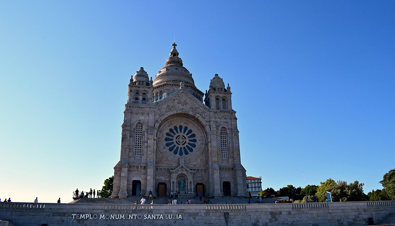

Portada
Categoria
Presentació
Enllaços
Descobreix lo millor que
Viana do Castelo té per oferir:
Llocs Turistics

Santuari de Santa Luzia
Barco hospital Gil Eannes
Santuari de Santa Luzia
Santuari de Santa Luzia
Gastronomia
Festes